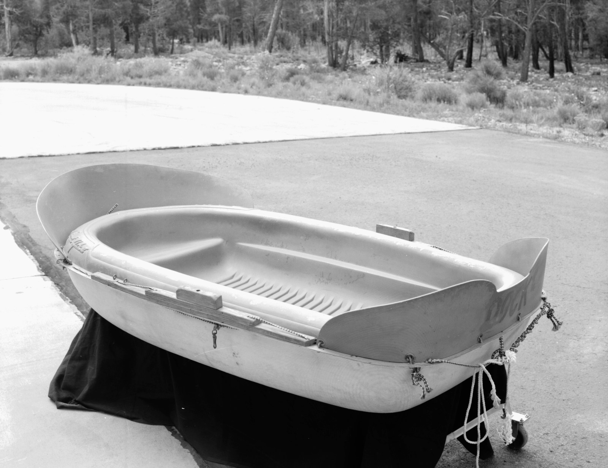
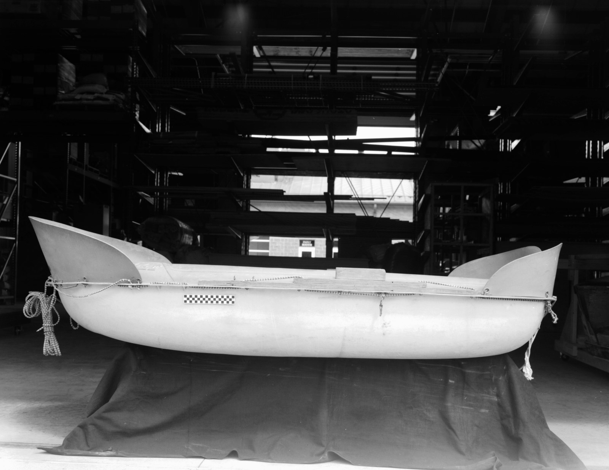
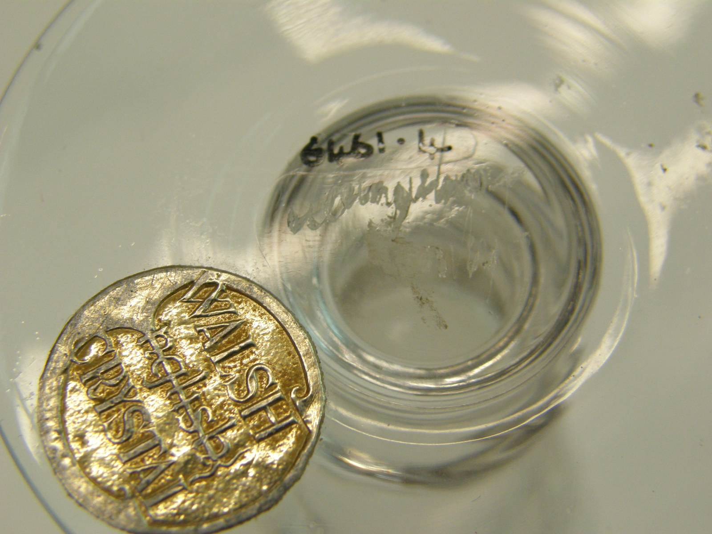
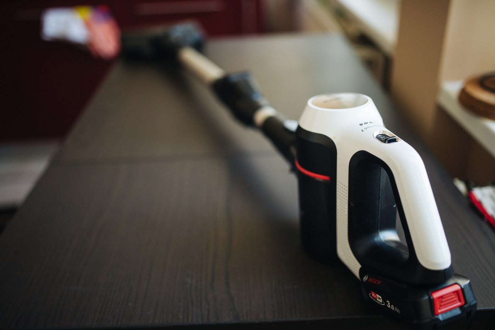
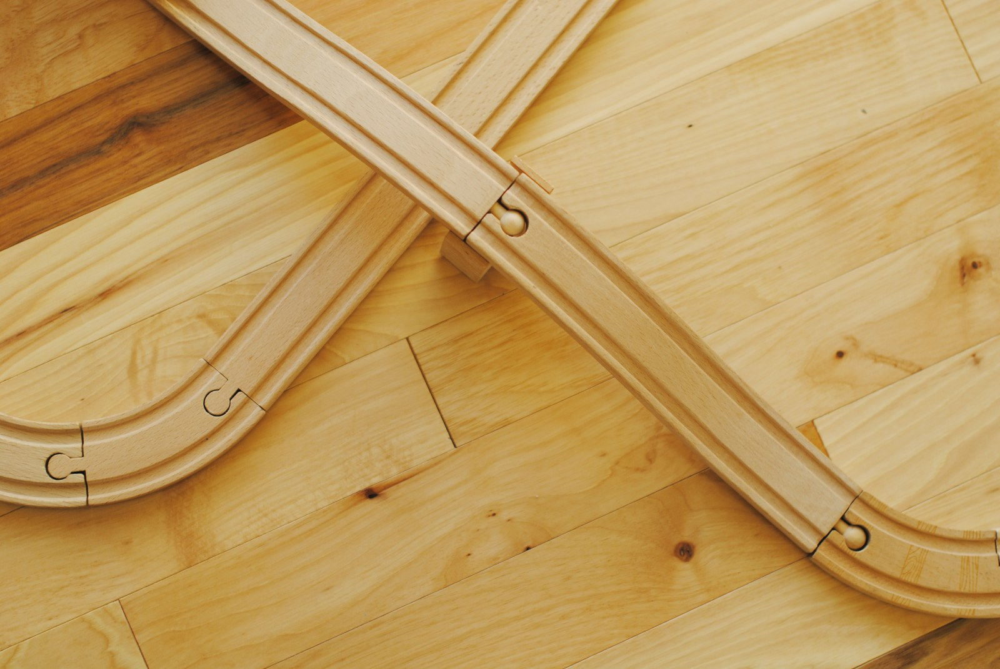
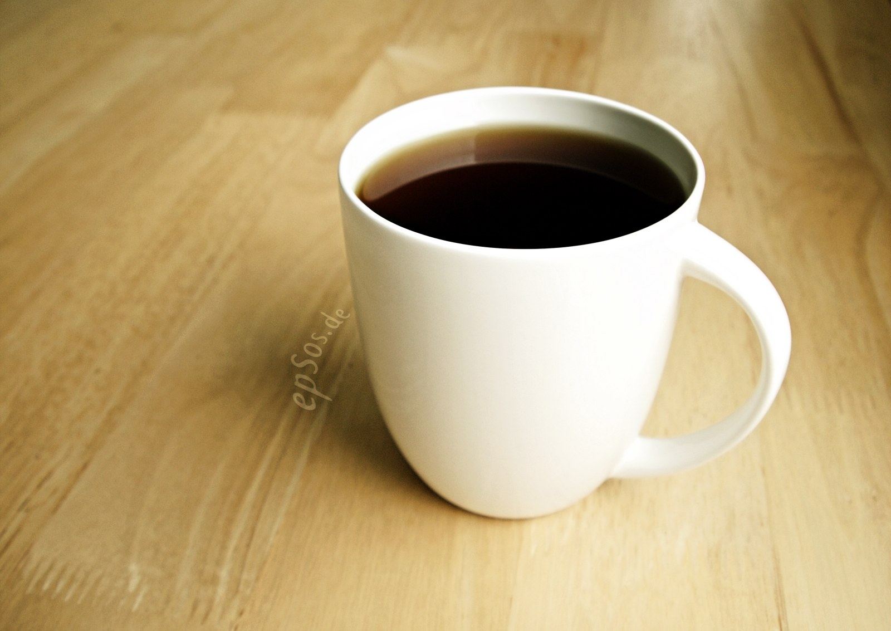
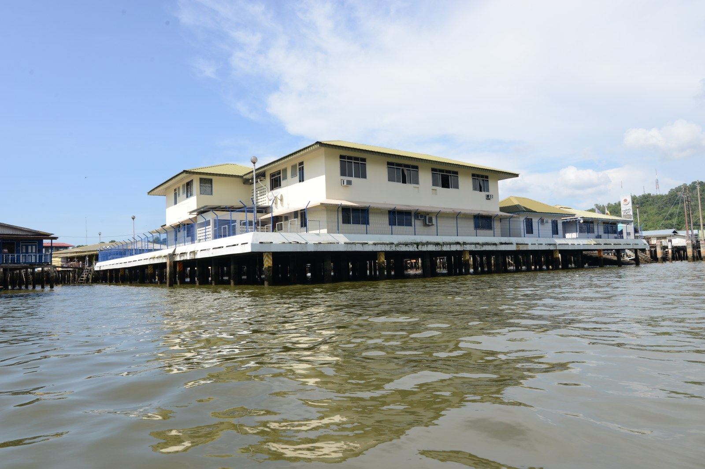

#003 · producto · 1600x1190 · BY · Openverse GRCA 9085 Grand Canyon Historical Boat Collection Sportyak II (Dock) (7420817736) · backpack product photo · Grand Canyon National Park https://commons.wikimedia.org/w/index.php?curid=89299919

#004 · producto · 1600x1233 · BY · Openverse GRCA 9085 Grand Canyon Historical Boat Collection Sportyak II (Dock) (7420819468) · backpack product photo · Grand Canyon National Park https://commons.wikimedia.org/w/index.php?curid=89299914

#005 · producto · 1600x1238 · BY · Openverse GRCA 9085 Grand Canyon Historical Boat Collection Sportyak II (Dock) (7420816154) · backpack product photo · Grand Canyon National Park https://commons.wikimedia.org/w/index.php?curid=89299917

#006 · producto · 1600x1200 · BY · Openverse Decanter set · table lamp home decor · W Clyne Farquharson; John Walsh Walsh https://commons.wikimedia.org/w/index.php?curid=65473610

#007 · producto · 1600x1068 · BY · Openverse Cordless vacuum cleaner in the kitchen closeup · vacuum cleaner cordless · Shixart1985 https://commons.wikimedia.org/w/index.php?curid=187705076

#008 · producto · 1600x1071 · CC0 · Openverse Wooden toy train • tracks and bridge · toy train wooden · Thane Keller https://commons.wikimedia.org/w/index.php?curid=46315235

#009 · producto · 1600x1133 · BY · Openverse Black Coffee and Tea in White Cup is Hot · ceramic mug coffee · epSos.de https://commons.wikimedia.org/w/index.php?curid=27942430

#010 · rubro · 1600x1067 · BY · Openverse Kampong Ayer (18593536531) · home interior modern living · Jorge Láscar from Melbourne, Australia https://commons.wikimedia.org/w/index.php?curid=66056589